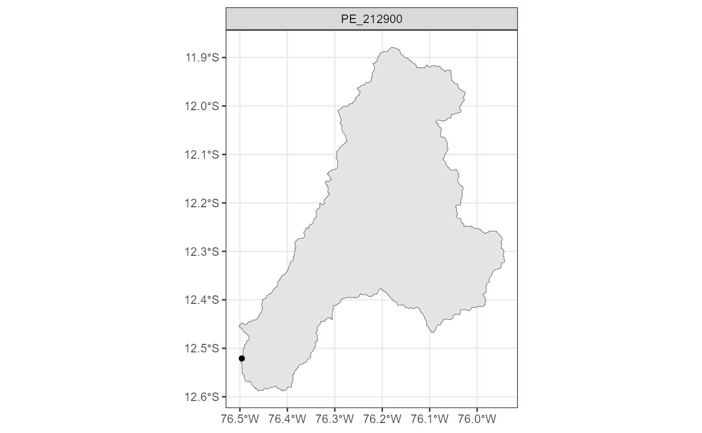
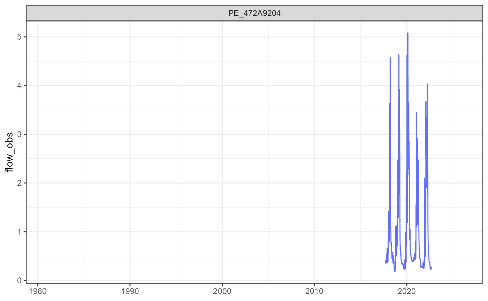
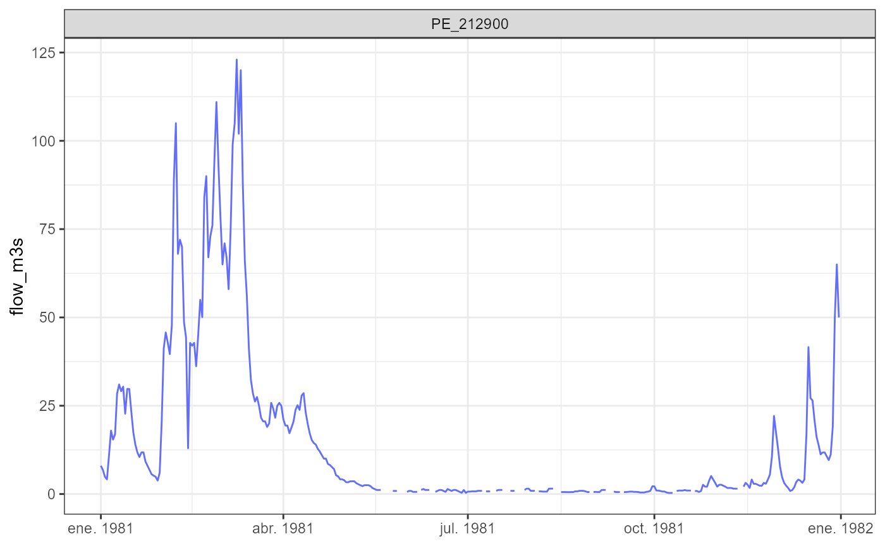

Introduction
RCamelsPE is an R package designed to read, process, and
visualize data from the CAMELS-PE dataset: Catchment Attributes
and Meteorology for Large-sample Studies - Peru.
This vignette provides a practical introduction to the package, guiding users through a typical workflow:
- explore available basins
- inspect their physical and climatic characteristics
- analyze hydroclimatic time series
Installation
Install the package from CRAN when available:
install.packages("RCamelsPE")The development version can be installed from GitHub:
# install.packages("remotes")
remotes::install_github("hllauca/RCamelsPE")Load the package:
Download the CAMELS-PE dataset
The CAMELS-PE dataset is distributed separately from the package and is available from Zenodo:
https://doi.org/10.5281/zenodo.20058779
The dataset is currently temporarily restricted while the associated scientific article is under preparation.
The dataset can be downloaded automatically with:
download_camels_pe(path = "my/path")This function downloads and extracts the dataset, and
automatically
defines the CAMELS-PE dataset path for the current R session.
Set the CAMELS-PE dataset path manually
If the dataset has already been downloaded manually, define the local CAMELS-PE path with:
set_camels_path("path/to/CAMELS-PE")For reproducible execution of this vignette, the dataset path is read
from the CAMELSPE_PATH environment variable.
if (has_camels_data) {
set_camels_path(camels_path)
}Explore the data dictionary
The data dictionary describes available metadata fields, attributes, geospatial layers, time series variables, units, source files, and data sources.
dict <- read_dictionary()
head(dict)
#> # A tibble: 6 × 7
#> folder file category variable description unit source
#> <chr> <chr> <chr> <chr> <chr> <chr> <chr>
#> 1 01_metadata stations.csv metadata gauge_id Catchment identif… - SENAM…
#> 2 01_metadata stations.csv metadata gauge_name Gauge name provid… - SENAM…
#> 3 01_metadata stations.csv metadata gauge_region Hydrographic regi… - SENAM…
#> 4 01_metadata stations.csv metadata gauge_lat Gauge latitude (W… degN SENAM…
#> 5 01_metadata stations.csv metadata gauge_lon Gauge longitude (… degE SENAM…
#> 6 01_metadata stations.csv metadata gauge_elev Gauge elevation m_asl SENAM…Time series variables can be inspected with:
read_dictionary(category = "timeseries")
#> # A tibble: 12 × 7
#> folder file category variable description unit source
#> <chr> <chr> <chr> <chr> <chr> <chr> <chr>
#> 1 03_timeseries timeseries.csv timeseries date Date (YYYY-MM-… NA Deriv…
#> 2 03_timeseries timeseries.csv timeseries gauge_id Unique gauge i… NA SENAM…
#> 3 03_timeseries timeseries.csv timeseries prec Daily precipit… mm/d… PISCO…
#> 4 03_timeseries timeseries.csv timeseries prec_var Precipitation … mm2/… PISCO…
#> 5 03_timeseries timeseries.csv timeseries flow_obs Observed strea… mm/d… Obser…
#> 6 03_timeseries timeseries.csv timeseries flow_sim Simulated stre… mm/d… PISCO…
#> 7 03_timeseries timeseries.csv timeseries pet Potential evap… mm/d… PISCO…
#> 8 03_timeseries timeseries.csv timeseries tmin Minimum air te… degC PISCO…
#> 9 03_timeseries timeseries.csv timeseries tmean Mean air tempe… degC PISCO…
#> 10 03_timeseries timeseries.csv timeseries tmax Maximum air te… degC PISCO…
#> 11 03_timeseries timeseries.csv timeseries srad Surface solar … MJ/m… ERA5-…
#> 12 03_timeseries timeseries.csv timeseries vprp Vapor pressure hPa ERA5-…Topographic attributes can be inspected with:
read_dictionary(category = "topographic")
#> # A tibble: 7 × 7
#> folder file category variable description unit source
#> <chr> <chr> <chr> <chr> <chr> <chr> <chr>
#> 1 02_attributes topographic_attribut… topogra… area Catchment … km2 FABDE…
#> 2 02_attributes topographic_attribut… topogra… perimet… Catchment … km FABDE…
#> 3 02_attributes topographic_attribut… topogra… elev_min Catchment … m_asl FABDE…
#> 4 02_attributes topographic_attribut… topogra… elev_max Catchment … m_asl FABDE…
#> 5 02_attributes topographic_attribut… topogra… elev_me… Catchment … m_asl FABDE…
#> 6 02_attributes topographic_attribut… topogra… elev_me… Catchment … m_asl FABDE…
#> 7 02_attributes topographic_attribut… topogra… slope_m… Catchment … m/km FABDE…Explore available stations
The station metadata table contains the available gauging stations
and catchments. Each row represents a catchment identified by a unique
gauge_id.
stations <- read_metadata()
head(stations)
#> # A tibble: 6 × 15
#> gauge_id gauge_name gauge_region gauge_lat gauge_lon gauge_elev
#> <chr> <chr> <chr> <dbl> <dbl> <dbl>
#> 1 PE_472A9204 Chilca Atlantic -13.2 -72.3 2770
#> 2 PE_210003 Huancasaya Titicaca -15.1 -69.2 4327
#> 3 PE_204617 Huatiapa Pacific -16.0 -72.5 684
#> 4 PE_472935F2 Intihuatana Km105 Atlantic -13.2 -72.5 2166
#> 5 PE_210406 Puente Isla Cabanillas Titicaca -15.5 -70.2 3837
#> 6 PE_270503 Puente Zapatilla Titicaca -16.1 -69.6 3836
#> # ℹ 9 more variables: gauge_record_start <date>, gauge_record_end <date>,
#> # gauge_perc_obs <dbl>, name_cat <chr>, is_nested <lgl>,
#> # nested_group_id <chr>, nested_group_size <dbl>, downstream_gauge_id <chr>,
#> # upstream_gauge_id <chr>Select one basin to work with:
gauge_id <- stations$gauge_id[1]
gauge_id
#> [1] "PE_472A9204"Read geospatial data
CAMELS-PE includes spatial data for catchments and gauges.
catchments <- read_geospatial("catchments")
gauges <- read_geospatial("gauges")Plot catchment location
plot_catchments(
catchments = catchments,
gauges = gauges,
gauge_id = gauge_id
)
This helps identify the basin location, geographic setting, and relation to other basins.
Explore catchment attributes
CAMELS-PE includes multiple groups of attributes describing each basin.
topo <- read_attributes("topographic")
head(topo)
#> # A tibble: 6 × 8
#> gauge_id area perimeter elev_min elev_max elev_mean elev_median slope_mean
#> <chr> <dbl> <dbl> <dbl> <dbl> <dbl> <dbl> <dbl>
#> 1 PE_472A92… 9188. 284. 2762 6317. 4210. 4216. 11.3
#> 2 PE_210003 2009. 230. 4312. 6030. 4659. 4620. 17.8
#> 3 PE_204617 13225. 1959. 685. 6415. 4213. 4496. 12.7
#> 4 PE_472935… 9576. 98.7 2144 6317. 4197. 4208. 11.5
#> 5 PE_210406 2867. 164. 3826. 5426. 4467. 4452. 3.24
#> 6 PE_270503 391. 149. 3825. 4616. 3991. 3954. 3.96
clim <- read_attributes("climatic")
head(clim)
#> # A tibble: 6 × 11
#> gauge_id p_mean pet_mean aridity p_seasonality high_prec_freq high_prec_dur
#> <chr> <dbl> <dbl> <dbl> <dbl> <dbl> <dbl>
#> 1 PE_472A9204 2.30 3.36 1.46 0.99 7.11 1.38
#> 2 PE_210003 1.84 2.91 1.58 0.98 7.78 1.35
#> 3 PE_204617 1.50 3.64 2.42 0.934 19.6 2.00
#> 4 PE_472935F2 2.30 3.35 1.46 0.991 6.58 1.38
#> 5 PE_210406 2.06 3.35 1.63 0.96 16.4 1.44
#> 6 PE_270503 2.18 3.19 1.46 0.954 17.2 1.54
#> # ℹ 4 more variables: high_prec_timing <chr>, low_prec_freq <dbl>,
#> # low_prec_dur <dbl>, low_prec_timing <chr>Other available attribute groups include:
hyd <- read_attributes(type = "hydrological")
land <- read_attributes(type = "landcover")
geo <- read_attributes(type = "geologic")
soil <- read_attributes(type = "soil")
human <- read_attributes(type = "human_intervention")Extract the attributes for the selected basin:
topo_sel <- topo[topo$gauge_id == gauge_id, ]
clim_sel <- clim[clim$gauge_id == gauge_id, ]
topo_sel
#> # A tibble: 1 × 8
#> gauge_id area perimeter elev_min elev_max elev_mean elev_median slope_mean
#> <chr> <dbl> <dbl> <dbl> <dbl> <dbl> <dbl> <dbl>
#> 1 PE_472A9204 9188. 284. 2762 6317. 4210. 4216. 11.3
clim_sel
#> # A tibble: 1 × 11
#> gauge_id p_mean pet_mean aridity p_seasonality high_prec_freq high_prec_dur
#> <chr> <dbl> <dbl> <dbl> <dbl> <dbl> <dbl>
#> 1 PE_472A9204 2.30 3.36 1.46 0.99 7.11 1.38
#> # ℹ 4 more variables: high_prec_timing <chr>, low_prec_freq <dbl>,
#> # low_prec_dur <dbl>, low_prec_timing <chr>These variables help describe the hydrological system:
- topography controls flow pathways and energy gradients
- climate defines water input and atmospheric demand
Read hydroclimatic time series
Daily time series may include precipitation, temperature, potential evapotranspiration, observed streamflow, simulated streamflow, solar radiation, and vapor pressure.
ts <- read_timeseries(
gauge_id = gauge_id,
vars = c("date", "gauge_id", "prec", "flow_obs")
)
head(ts)
#> # A tibble: 6 × 4
#> date gauge_id prec flow_obs
#> <date> <chr> <dbl> <dbl>
#> 1 1981-01-01 PE_472A9204 3.78 NA
#> 2 1981-01-02 PE_472A9204 3.66 NA
#> 3 1981-01-03 PE_472A9204 4.89 NA
#> 4 1981-01-04 PE_472A9204 9.42 NA
#> 5 1981-01-05 PE_472A9204 2.41 NA
#> 6 1981-01-06 PE_472A9204 3.23 NAPlot streamflow
plot_timeseries(ts, variable = "flow_obs")
#> Warning: Removed 14605 rows containing missing values or values outside the scale range
#> (`geom_line()`).
Units of streamflow
In CAMELS-PE, observed and simulated streamflow
(flow_obs and flow_sim) are expressed in
mm/day.
This unit represents runoff depth over the catchment area and allows comparison between basins of different sizes.
In many applications, streamflow is required in m3/s. To convert from mm/day to m3/s, the catchment area must be used:
where:
- is streamflow in mm/day
- is catchment area in km2
- 86400 is the number of seconds per day
area_km2 <- topo_sel$area
ts$flow_m3s <- ts$flow_obs * area_km2 * 1e6 / (1000 * 86400)
plot_timeseries(ts, variable = "flow_m3s")
#> Warning: Removed 14605 rows containing missing values or values outside the scale range
#> (`geom_line()`).
Compare multiple catchments
ts_multi <- read_timeseries(
gauge_id = stations$gauge_id[1:2],
vars = c("date", "gauge_id", "prec")
)
plot_timeseries(ts_multi, variable = "prec", facet = TRUE)
Filter a specific catchment
plot_timeseries(
ts_multi,
variable = "prec",
gauge_id = stations$gauge_id[1]
)
Typical workflow
library(RCamelsPE)
# Optional: download dataset from Zenodo
# download_camels_pe(path = "my/path")
set_camels_path("path/to/CAMELS-PE")
read_dictionary(category = "timeseries")
stations <- read_metadata()
gauge_id <- stations$gauge_id[1]
ts <- read_timeseries(
gauge_id = gauge_id,
vars = c("date", "gauge_id", "prec", "flow_obs")
)
plot_timeseries(ts, variable = "flow_obs")Summary
With RCamelsPE, users can:
- access hydroclimatic data
- explore basin characteristics
- visualize time series and spatial data
- compare multiple catchments
This makes the package suitable for hydrological analysis, teaching, model development, and large-sample hydrology studies.
Notes
To run the examples with real data, download the CAMELS-PE dataset
using download_camels_pe() or manually from Zenodo.
The download_camels_pe() function automatically defines
the dataset path for the current R session.
If the dataset was downloaded manually, or in a previous R session,
define the local dataset path using set_camels_path().